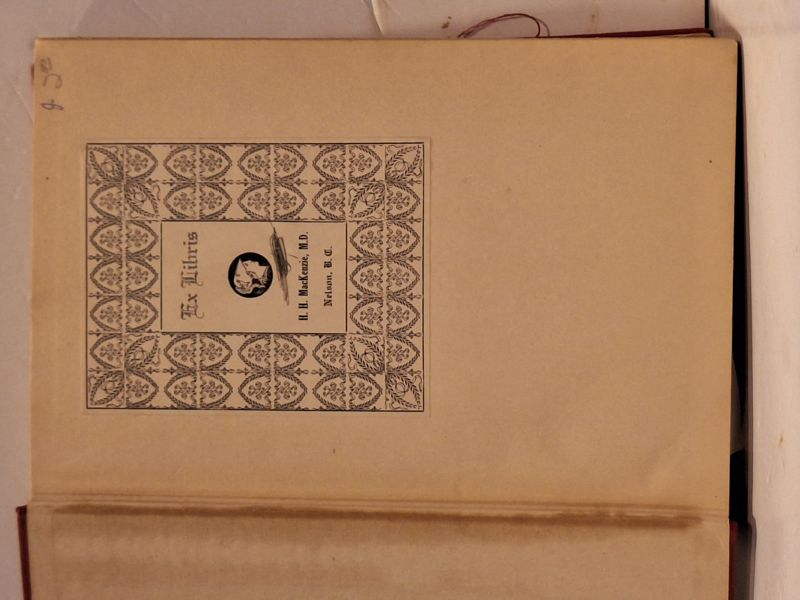

With Napoleon in Russia: The Memoirs of General de Caulaincourt, Duke of Vicenza
Armand de Caulaincourt (edited by Jean Hanoteau, introduction by George Libaire) · William Morrow and Company, New York, 1935

C$42.0 · Very Good condition
William Morrow and Company, New York, 1935 first US edition. Copyright page reads: 'WITH NAPOLEON IN RUSSIA / Copyright 1935 by William Morrow and Company, Inc. / All rights reserved... / Printed in the U.S.A.' From the original memoirs as edited by Jean Hanoteau, abridged, edited, and with an introduction by George Libaire. Caulaincourt (1773-1827) was Napoleon's Grand Equerry and accompanied him on the 1812 Russian campaign, including the disastrous retreat from Moscow - a first-hand primary source by one of Napoleon's closest aides. Red cloth boards with blind-stamped front-cover device and gilt-stamped spine titling ('WITH NAPOLEON IN RUSSIA / CAULAINCOURT / MORROW'). Includes a photogravure frontispiece of Armand de Caulaincourt, Duke of Vicenza, after the Gerard portrait from the collection of Mme. la Comtesse Gerard de Mouniner. Provenance: armorial bookplate 'Ex Libris H.H. MacKenzie, M.D., Nelson, B.C.' on front pastedown (British Columbia interior - Nelson is the West Kootenay city). Boards clean with light shelfwear, gilt bright on spine, hinges sound, text block tight with no foxing, frontispiece intact. No dust jacket.
Details
- Publisher: William Morrow and Company, New York, 1935
- Binding: Hardcover
- Edition: First US Edition (1935)
- Condition: Very Good
- Category: Military